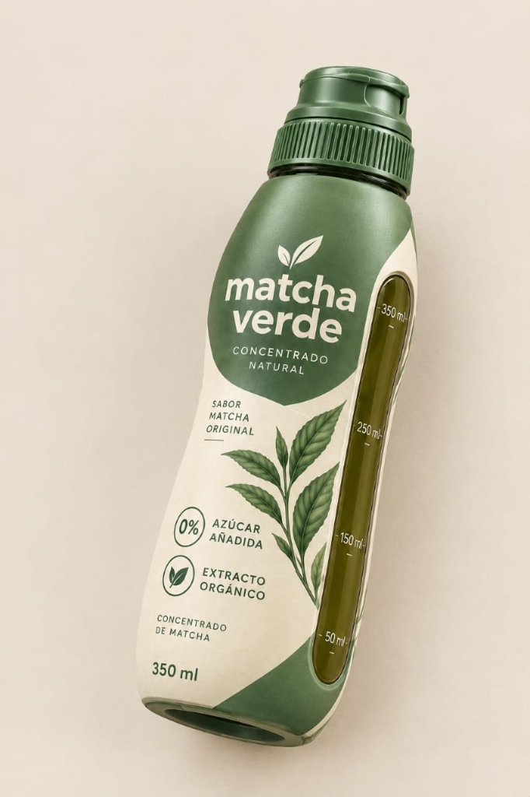
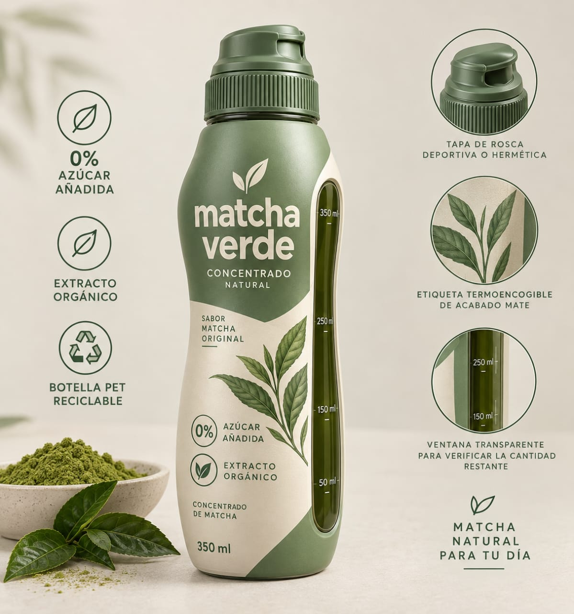
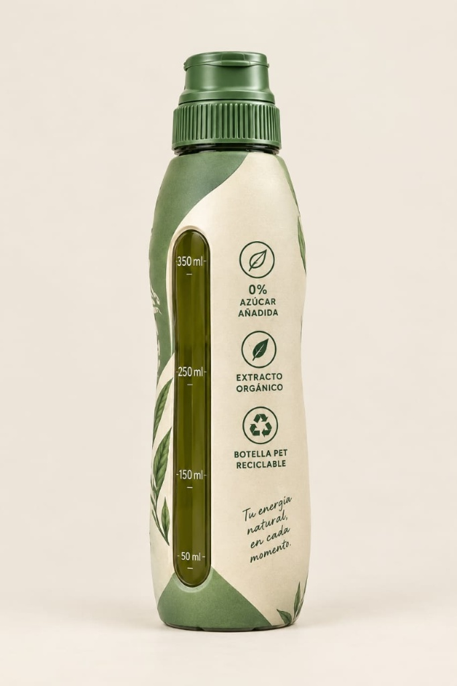

Tapa y Dosificación
Tapa de rosca deportiva y hermética con mecanismo de vertido antigoteo, diseñada para transportar con seguridad en el bolso y controlar con precisión cada servicio.

Nuestro concentrado líquido de té matcha de extracción en frío (cold brew) transforma la tradición ceremonial en una experiencia portátil, limpia e instantánea. Elaborado exclusivamente con hojas orgánicas molidas en piedra y agua purificada fría, conserva toda la L-teanina y los antioxidantes del matcha sin amargor excesivo ni azúcar añadida.
Su envase ergonómico de 350 ml con franja lateral graduada (50 ml, 150 ml, 250 ml y 350 ml) te permite dosificar con exactitud cada bebida fría o caliente, logrando hasta 7 preparaciones consistentes y llenas de energía sostenida.
Cada componente estructural de la botella Cold Brew Concentrate responde a necesidades reales de movilidad, conservación del extracto y sostenibilidad.
Tapa de rosca deportiva y hermética con mecanismo de vertido antigoteo, diseñada para transportar con seguridad en el bolso y controlar con precisión cada servicio.
Botella de plástico PET reciclable (rPET) de 350 ml, ligera y resistente a impactos, con silueta curva ergonómica para un agarre firme y cómodo en movimiento.
Etiqueta termoencogible (sleeve) de acabado mate en verde salvia y crema con sellos de pureza, combinada con una ventana lateral transparente graduada para controlar el volumen restante.
Preserva el tono verde esmeralda intenso y brillante del concentrado natural en frío, resaltando su textura homogénea gracias al contraste visual del empaque.



Información nutricional transparente y parámetros técnicos de conservación para disfrutar la máxima frescura en cada preparación.
| Parámetro / Nutriente | Valor por Porción (50 ml) | Detalle Técnico |
|---|---|---|
| Contenido Neto Total | 350 ml (7 porciones) | Botella ergonómica rPET 100% reciclable |
| Valor Energético | 5 kcal | Apto para planes de control calórico y ayuno ligero |
| Azúcares Añadidos | 0 g (0%) | Sin edulcorantes artificiales ni jarabes |
| Cafeína Natural / L-Teanina | 68 mg / 28 mg | Energía sostenida y enfoque mental sin picos de ansiedad |
| Ingredientes | Extracto orgánico de matcha y agua filtrada | Extracción lenta en frío durante 12 horas |
| Conservación Recomendada | Refrigerado (2 °C – 6 °C) | Consumir preferiblemente en los 14 días posteriores a su apertura |